Updated 2026.10.19
Since 1997.1.1
Explore
Tsugutoshi Suzuki, MD, PhD
Pediatric Electrophysiologist
I am a pediatrician specializing in arrhythmias in children at Osaka City General Hospital in Osaka, Japan.
This site collects my press coverage, academic activities, papers and other writing, and catheter ablation work.
Press & TV
Press & TV
Articles in the Yomiuri Shimbun (2014, 2016, 2020) and news coverage of a 2010 press conference. The articles can be enlarged to read.
See the articlesAcademic
Societies & Talks
Work for the Japanese Society of Pediatric Electrocardiology and a record of lectures and seminars since 2012.
- 2025Representative Director, Japanese Society of Pediatric Electrocardiology
- 26thPresident of the 26th Annual Meeting (2022)
- 60+Lectures and seminars since 2012
Papers & Writing
Papers & Writing
Papers in journals such as Heart Rhythm, and chapters in textbooks and medical journals.

Resources
Resources & Apps
Materials and web apps for patients, families, and medical professionals (mostly in Japanese).
Catheter ablation and electrophysiology study (PDF)
An explanation of the procedures for patients and families.
Openupdated 2021.1.6Differentiating FVP from WPW
Materials for differentiating fasciculoventricular pathways from WPW syndrome, including slides.
Openupdated 2026.10.5PVC induction by atrial pacing
A web app for judging whether atrial pacing induces PVCs.
Open the appupdated 2026.10.6Angiography image composer
An HTML and Mac app that combines RAO and LAO fluoroscopy images of catheter positions. The HTML version also works on Windows.
Details and downloadupdated 2026.10.8Admission and accommodation
Information on admission to Osaka City General Hospital and nearby accommodation for families.
Openupdated 2021.1.6
Milestones
My career in
pediatric arrhythmia and
catheter ablation
- Society
Appointed Representative Director of the Japanese Society of Pediatric Electrocardiology
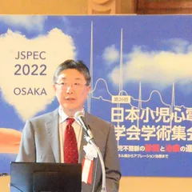
SocietyHosted the 26th Annual Meeting of the Japanese Society of Pediatric Electrocardiology as President
Held at Osaka City Central Public Hall.
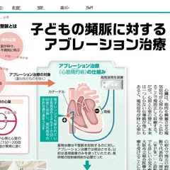
PressArticle in the Yomiuri Shimbun (Kansai, Chugoku and Shikoku editions)
- Research
Review of 1,000 ablation procedures published in Heart Rhythm
To mark more than 1,000 ablation procedures in the 12 years since I moved to Osaka in 2006, our senior resident Dr. Yuko Kato summarized our experience in a paper published in Heart Rhythm, the journal of the Heart Rhythm Society.
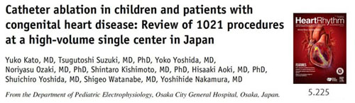
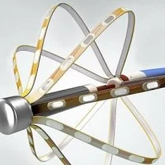
ClinicalIntroduced the Rhythmia 3D mapping system
A new 3D mapping system for ablation that allows even more precise treatment.
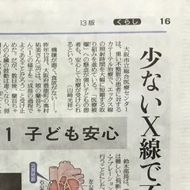
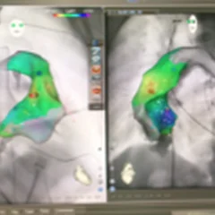
ClinicalFirst in western Japan to introduce the CARTO UNIVU system
Radiation exposure during catheter treatment of arrhythmias in children was dramatically reduced.
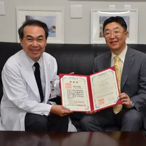
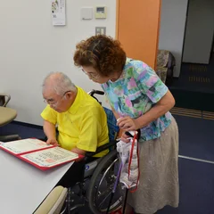
ResearchPhD for the paper on differentiating fasciculoventricular pathways
I received my PhD for one of my three papers, on the differential diagnosis of fasciculoventricular pathways. I was very happy that my family and my parents were so pleased.
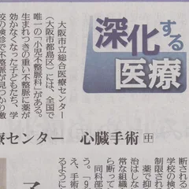
PressOur Department of Pediatric Electrophysiology featured in the Yomiuri Shimbun
- Research
Two papers accepted in Heart Rhythm and one in Circulation Journal
A rewarding year in which three English papers were accepted.
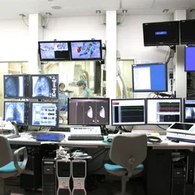
ClinicalA catheterization laboratory dedicated to ablation was completed
About "Cath Lab No. 5" (Japanese)How it was built (Japanese)
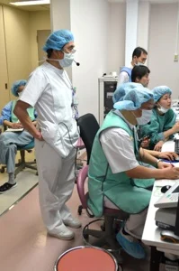
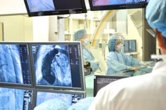
ClinicalJapan's first Department of Pediatric Electrophysiology was founded
Founded with Dr. Yoshihide Nakamura, who joined us from Japanese Red Cross Wakayama Medical Center.
- Career
Moved from Tokyo Women's Medical University to Osaka City General Hospital
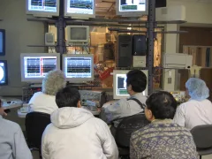
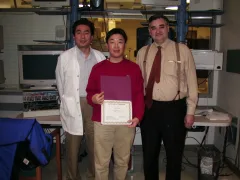
CareerShort-term training at the University of Oklahoma, USA
I experienced the latest in ablation. Only ten days, but a precious experience, including the people I met.
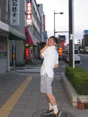
CareerEntered the world of pediatric ablation at Japanese Red Cross Wakayama Medical Center
In my eleventh year as a pediatrician, a major turning point in my life.
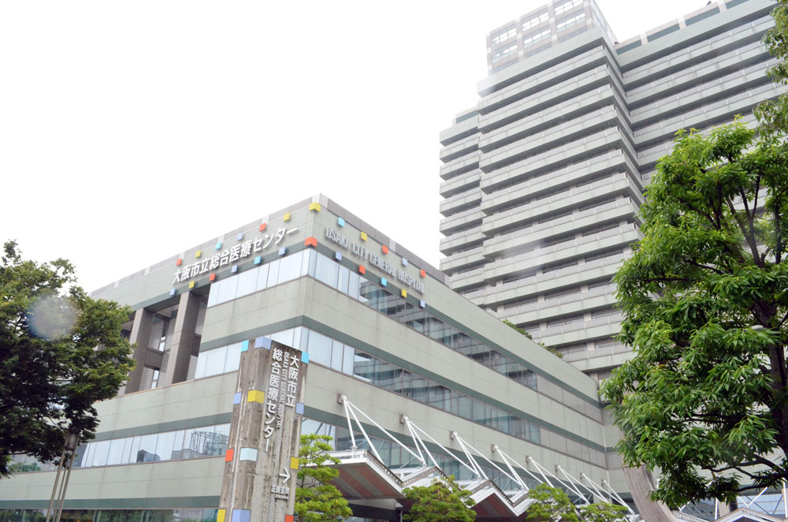
Hospital
Osaka City General Hospital
Pediatric Cardiology and Arrhythmia
- Department page on the hospital website (Japanese)
- Admission and accommodation (Japanese)
- "Cath Lab No. 5" (Japanese)The catheterization laboratory dedicated to ablation
Personal
A little personal
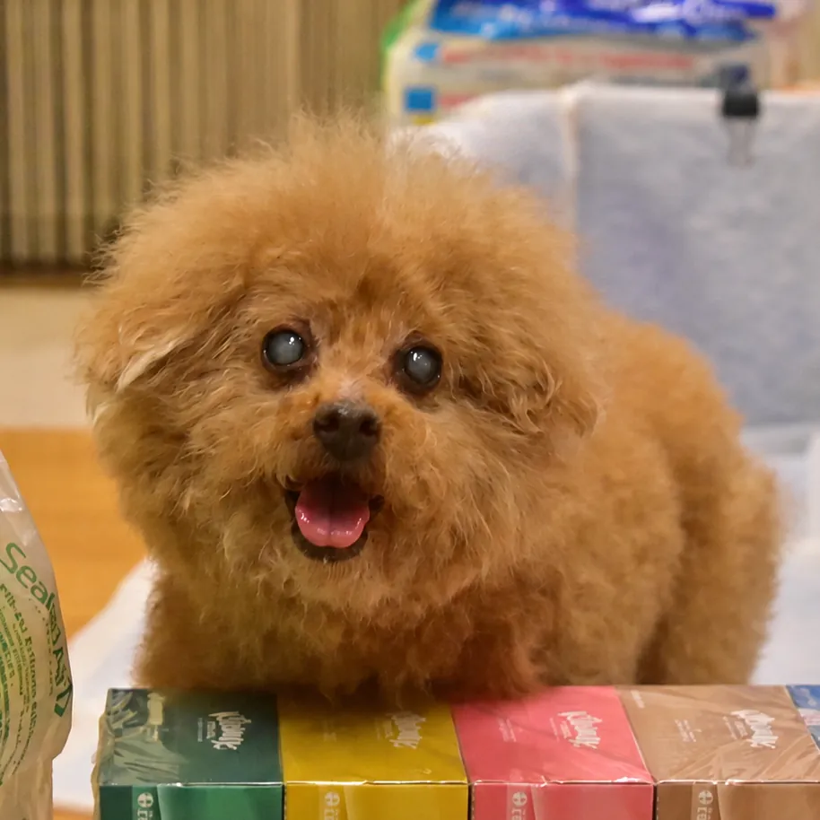
On September 26, 2026, Rox was honored for his longevity at age 17 at Osaka City Central Public Hall.
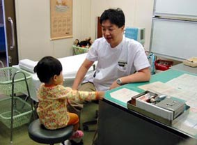
However many times I read it, it is a wonderful poem.
She is said to have inherited the talent from her mother (a doting parent...)
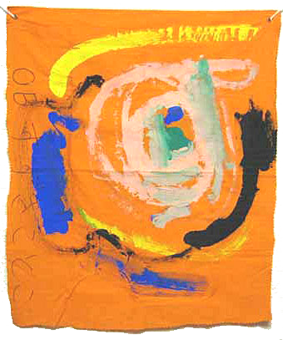